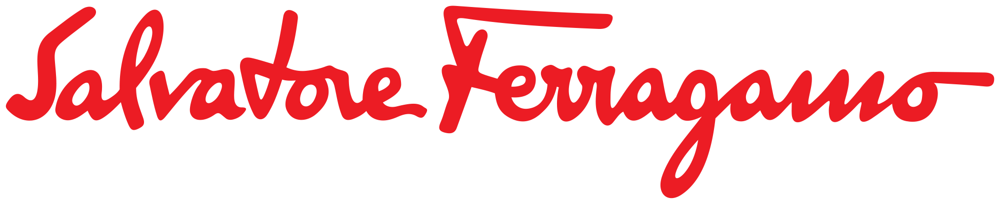

살바토레 페라가모 Ferragamo
살바토레 페라가모(Salvatore Ferragamo)는 1927년 살바토레 페라가모가 피렌체에 세운 이탈리아 럭셔리 슈즈·패션 하우스이다.
최종 업데이트

살바토레 페라가모는 어떤 브랜드인가
살바토레 페라가모(Ferragamo)는 1898년생 구두 장인 살바토레 페라가모가 미국 할리우드에서 '스타들의 구두장이'로 명성을 쌓은 뒤 1927년 이탈리아 피렌체로 돌아와 공방을 연 럭셔리 슈즈·패션 하우스다. 코르크 웨지힐 같은 발명으로 여성화를 재정의했고 가방과 향수로 영역을 넓혔다.
2011년 밀라노 증시에 상장했으나 창업 가문이 약 65퍼센트 지분을 쥔 가족 지배 상장사로 남아 있다.
살바토레 페라가모는 어떻게 봐야 할까
럭셔리 풋웨어 시장에서 페라가모의 차별점은 패션 하우스가 뒤늦게 신발을 다루는 방식이 아니라, 구두 장인이 직접 세운 하우스라는 헤리티지에 있다. 창업자는 1937년 코르크 웨지힐을 발명하고 보강 생크 구조로 착화감을 끌어올려 여성화를 재정의했으며, 미국 백화점 니먼 마커스 상을 받은 첫 구두 디자이너로 기록됐다.
다만 2011년 상장 이후에도 가문이 경영을 쥔 구조 속에서 2020년대 들어 아시아 수요 둔화로 실적이 부진해, 2022년 영입한 젊은 크리에이티브 디렉터를 앞세운 재정비와 2025년 최고경영자 교체가 브랜드 방향을 좌우하는 변수로 떠올랐다. 한국에서도 바라 펌프스가 입문 라인으로 통한다.
살바토레 페라가모는 어떻게 시작되고 성장했나
살바토레 페라가모는 1898년 이탈리아 남부 보니토에서 태어나 어린 나이에 구두를 배우고 미국으로 건너갔다. 1923년 할리우드 부츠 숍을 인수해 루돌프 발렌티노, 글로리아 스완슨, 조앤 크로퍼드 같은 배우들의 신발을 지으며 '스타들의 구두장이'로 불렸다.
생산 품질을 직접 통제하려는 뜻으로 1927년 8월 피렌체로 돌아와 비아 만넬리에 공방을 차렸고, 1930~40년대 코르크 웨지힐과 보강 생크 등 발명으로 특허를 쌓았다. 창업자가 1960년 세상을 떠난 뒤 미망인 완다와 장녀 피암마를 비롯한 가족이 경영을 이었고, 피암마는 1972년 간치니, 1978년 바라 펌프스를 만들어 신발에서 가죽 제품으로 영역을 넓혔다.
2011년에는 밀라노 증시에 상장했다.
살바토레 페라가모의 브랜드 아이덴티티는 무엇인가
페라가모의 정체성은 이탈리아 장인정신과 절제된 우아함의 결합이다. 피렌체 본사 팔라초의 철문에서 따온 갈고리 모양 간치니 장식과 그로스그레인 리본을 단 바라 펌프스가 하우스를 상징하는 코드이며, 가방·벨트·구두를 가로지른다.
2022년 합류한 크리에이티브 디렉터는 브랜드명을 '페라가모'로 줄이고 새 로고를 도입해 톤을 현대적이고 관능적인 쪽으로 재조정했다. 타깃은 헤리티지의 무게와 동시대 감각을 함께 원하는 럭셔리 소비자다.
살바토레 페라가모의 대표 제품과 서비스는 무엇인가
대표 제품은 1978년 탄생한 바라 펌프스로, 낮은 블록힐과 둥근 토, 금장 명판을 단 리본이 특징이다. 갈고리 모양 간치니를 새긴 토트백과 로퍼, 발레 플랫도 핵심 라인이다.
가격대는 바라 펌프스가 정가 기준 백만 원대 초반, 간치니 토트백이 수백만 원대에 형성되며, 공식 온라인 스토어와 백화점·직영 부티크에서 판매된다.
살바토레 페라가모는 지금 어떤 상태인가
페라가모는 창업 가문이 약 65퍼센트 지분으로 지배하는 상장사로, 본사는 이탈리아 피렌체 팔라초 스피니 페로니에 있다. 2024 회계연도 매출은 약 10억 3,500만 유로로 전년 대비 약 10.5퍼센트 감소했고, 6,800만 유로의 순손실을 기록해 2023년 흑자에서 적자로 돌아섰다.
직접 판매가 매출의 약 75퍼센트를 차지하며 아시아·태평양 부진이 컸다. 2025년 3월 최고경영자 마르코 고베티가 물러난 뒤 회장 레오나르도 페라가모가 경영을 직접 챙기고 있다.
세부 내부 지표는 미공개다.
살바토레 페라가모 연혁 — 주요 사건은 언제였나
살바토레 페라가모 로고는 어떻게 변해왔나
대표 로고대표 브랜드 마크
대표 로고 1보관 이미지 1자주 묻는 질문
살바토레 페라가모는 어느 나라 브랜드인가요?
살바토레 페라가모는 이탈리아의 패션·럭셔리 브랜드입니다.
살바토레 페라가모는 언제 설립되었나요?
살바토레 페라가모는 1927년 설립되었습니다.
살바토레 페라가모의 브랜드 아이덴티티는 무엇인가요?
페라가모의 정체성은 이탈리아 장인정신과 절제된 우아함의 결합이다.
살바토레 페라가모의 대표 제품은 무엇인가요?
대표 제품은 1978년 탄생한 바라 펌프스로, 낮은 블록힐과 둥근 토, 금장 명판을 단 리본이 특징이다.
살바토레 페라가모는 현재 어떤 상태인가요?
페라가모는 창업 가문이 약 65퍼센트 지분으로 지배하는 상장사로, 본사는 이탈리아 피렌체 팔라초 스피니 페로니에 있다.
살바토레 페라가모의 창업자는 누구인가요?
살바토레 페라가모의 창업자는 살바토레 페라가모입니다(위키데이터 기준).
살바토레 페라가모의 본사는 어디에 있나요?
살바토레 페라가모의 본사는 피렌체에 있습니다(위키데이터 기준).
출처와 검증
살바토레 페라가모 관련 참고: 공식 웹사이트 · 위키데이터 Q3946053 · 한국어 위키백과 · 영어 위키백과. 브랜드명은 한글과 원어를 함께 표기하되 데이터에 없는 표기는 만들지 않습니다. 기원 국가·설립연도는 검수된 정의문에서 확인된 값을 우선하고, 없을 때만 공식 웹사이트 URL이 일치하는 위키데이터 개체의 값을 씁니다. 위키데이터 값은 2026-09-07 기준입니다.